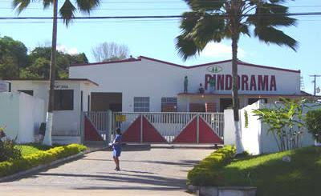

- Ovos e aves
- Leite e derivados
- Mel
- Frutas e verduras
Produção | História | Contato

A cooperativa nasceu da união de pequenos produtores da região, que decidiram trabalhar juntos para fortalecer a produção loca.
Sozinho vamos rápido, juntos vamos mais longe. /nem sempre/
Página produzida na aula de programação web - Semana 1.